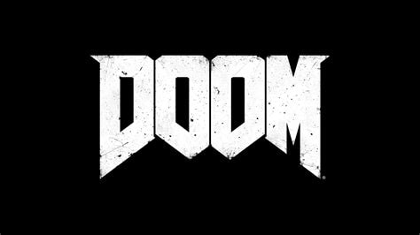
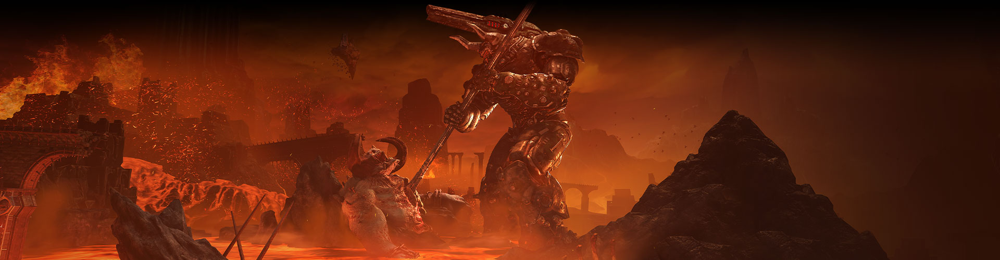

夷平地狱
地狱军队入侵地球。在史诗级单人战斗中成为杀手，征服各种维度的恶魔，阻止人类的最终毁灭。
他们唯一害怕的…就是你。
DOOM 1~3代
| " | 在这个特殊的时刻，我不相信我对宇宙中的任何物体都有比这把霰弹枪更健康或更深刻的尊重...... | " |
| ~ 1996年漫画中DOOM的名言。 |
doom1与2其实并没有太多剧情，Doom 3. 是經典的火星基地鬧鬼，一個大兵殺光所有惡魔的故事。
Doom 3. 資料片惡靈復蘇：大boss沒有死，回到了地獄，大兵追到地獄殺死大boss.
但在1~3代中Doomguy还是个人类
DOOM2020
在不同的维度之间横冲直撞，闯出一条路，在向前冲刺的第一人称战斗中体验下一次飞跃，体验速度和力量的终极结合。在 DOOM Eternal 中夷平地狱、拯救人类、发现毁灭战士的起源。
DOOM® Eternal 由 id Software 开发，是 DOOM® 的续作，DOOM® 曾荣获 2016 年最佳动作游戏奖。
由 idTech 7 提供支持，设置了全新动感配乐，
DOOM Eternal 让你控制不可阻挡的毁灭战士，在不可思议的和从未见过的世界中，借助强大武器炸碎全新和经典恶魔。
